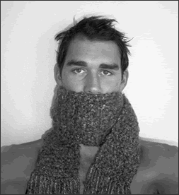

|  contact: BrianHyter@yahoo.com |
¬ ABOUT Ten years ago, the quest for the perfect beanie began. Finding nothing suitable, "Hyde" decided that something needed to be done. In 1995, with only one simple stitch, the first hyde Hand·Crafted beanie was produced. At that time the beanies were only made for friends, but as word spread people began to offer to pay in an attempt to beat the demand. As new stitches were discovered the business branched out to customized purses, scarves, belts, and bikinis. Even with the incredible expansion, Hyde continues to make each item by hand, custom fit to perfection. |